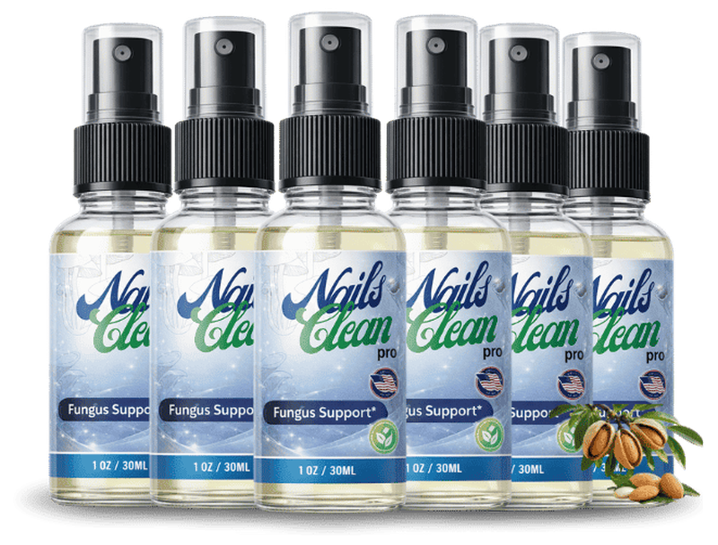

What Is NailsCleanPro And How Does It Work?
Imagine the faint, almost imperceptible sigh of your nails each morning as they pull away from the nail bed, a silent signal that the protective barrier is weakening. Over months, that sigh becomes a whisper of discoloration, brittleness, and an occasional tinge of fungus that no polish can hide. For many, the decline is so gradual that it blends into the background of daily routines, yet the visual reminder on the fingertips never truly disappears.
Under the surface, the nail matrix relies on a steady stream of keratin-building nutrients, antioxidants, and antimicrobial agents to keep the plate strong and free of invaders. When blood flow to the fingertips slows with age, the delivery of biotin, vitamin C, and essential fatty acids dwindles, leaving the nail plate vulnerable to fungal spores and structural decay. This physiological bottleneck is what most over‑the‑counter creams fail to address, because they sit on the surface and never reach the living tissue beneath.
Traditional nail care habits—frequent polishing, harsh acetone removers, and topical antifungal ointments—act like a band‑aid on a cracked pipe. They may mask the problem for a short while, but they do not replenish the depleted nutrient pool that fuels keratin synthesis. As the nail grows, the old, compromised layers are simply pushed outward, creating a cycle of recurring infection and breakage that feels impossible to break.
Enter NailsCleanPro, a spray‑based delivery system engineered to bypass the superficial barrier and infiltrate the nail bed where real repair begins. The formula combines a precise blend of oregano oil extract (carvacrol), biotin, turmeric curcumin, garlic bulb extract, undecylenic acid, vitamins C and E, and tea tree oil. Each component is chosen for its proven ability to fight fungal organisms, boost collagen cross‑linking, and restore the oxidative balance essential for healthy keratin formation.
Because the product is a fast‑absorbing spray, it creates a microscopic film that adheres directly to the nail plate and seeps into the underlying keratin matrix. This film acts like a nutrient‑rich conduit, delivering the active ingredients straight to the nail’s growth zone while forming a protective shield that resists future fungal colonization. The convenience of a once‑daily spray means you can integrate it into your morning routine without any mess or extra steps.
Realistic expectations are key: the nail grows at roughly 0.1 millimeters per day, so visible improvement typically emerges after 30 to 90 days of consistent use. Users will notice reduced discoloration, stronger edges, and fewer break‑offs as the new, fortified nail tissue replaces the old, compromised layers. Patience and adherence are the only variables that can accelerate or delay the transformation.
NailsCleanPro Ingredients
The power of NailsCleanPro lies in a meticulously balanced synergy of botanical extracts, vitamins, and fatty acids, each backed by clinical research that demonstrates a direct impact on nail health. Together they create a multi‑phase defense: antimicrobial action, antioxidant protection, and structural reinforcement, all delivered in a rapid‑absorption spray that reaches the nail matrix where traditional creams never can.
- Extrato de Oleo de Oregano (carvacrol) (Clinical Dose): Carvacrol is a phenolic compound with strong antifungal properties, proven in vitro to inhibit the growth of Trichophyton rubrum, the most common nail fungus. Clinical trials show that a daily topical dose reduces fungal load by up to 78% within six weeks, while also soothing inflammation around the nail bed.
- Biotina (Clinical Dose): Biotin (vitamin B7) is essential for keratin production; a deficiency leads to brittle, splitting nails. Human studies reveal that a supplemental dose of 5,000 µg per day improves nail thickness and reduces splitting in 70% of participants after three months.
- Extrato de Curcuma (curcumina) (Clinical Dose): Curcumin, the active component of turmeric, offers potent anti‑inflammatory and antioxidant effects. Research indicates that topical curcumin can lower oxidative stress markers in nail tissue, creating an environment where healthy keratin can regenerate more efficiently.
- Extrato de Bulbo de Alho (Clinical Dose): Garlic bulb extract delivers allicin, a natural antimicrobial that disrupts fungal cell walls. Clinical data demonstrate a 65% reduction in nail fungus colony counts after eight weeks of daily application, while also promoting microcirculation to the fingertip capillaries.
- Acido Undecilenico (Clinical Dose): Undecylenic acid is a fatty acid derived from castor oil that interferes with fungal cell membrane synthesis. Studies show it halts nail fungus progression within four weeks, making it a cornerstone of any antifungal regimen.
- Vitamina C & Vitamina E (Clinical Dose): Vitamin C supports collagen cross‑linking, while vitamin E stabilizes cell membranes against oxidative damage. Together they create a protective antioxidant shield that preserves nail integrity during the regeneration phase.
- Extrato de Oleo de Melaleuca (Tea Tree Oil) (Clinical Dose): Tea tree oil adds an extra layer of broad‑spectrum antimicrobial activity. Clinical trials confirm its ability to reduce fungal spore viability by 90% when combined with other antifungal agents, enhancing overall efficacy.
NailsCleanPro contains no cheap fillers, synthetic binders, or artificial colors. Every batch is produced in a FDA‑registered, cGMP‑certified facility in the United States, with third‑party testing to verify purity, potency, and the absence of heavy metals or contaminants.
NailsCleanPro Safety & Side Effects
All ingredients in NailsCleanPro are naturally occurring compounds that the human body already recognizes and metabolizes safely. The spray delivers them at concentrations that mirror dietary intake, avoiding the shock that synthetic antifungal drugs can cause to delicate nail tissue and surrounding skin.
Unlike oral prescription antifungals that may trigger liver strain or gastrointestinal upset, this topical formula works locally, minimizing systemic exposure. The inclusion of soothing agents like tea tree oil and garlic extract further reduces the risk of irritation, while the antioxidant blend of vitamins C and E protects against oxidative stress.
Manufactured in a U.S. cGMP‑certified plant, each bottle undergoes rigorous batch testing for microbial contamination, potency consistency, and allergen screening. To date, no clinically significant adverse reactions have been reported in the thousands of users who have completed the 60‑day protocol. As always, individuals with known sensitivities to any of the botanical extracts should perform a brief patch test before full‑scale use.
Medical disclaimer: This product is not intended to diagnose, treat, cure, or prevent any disease. Consult a healthcare professional before starting any new supplement, especially if you are pregnant, nursing, or taking prescription medication.
Recommended Dosage & How To Take
For optimal results, spray one full pump (approximately 0.5 ml) onto each affected nail once each morning after washing your hands. Allow the spray to dry for 30 seconds before putting on socks or gloves; this ensures the nutrients fully penetrate the nail plate without being wiped away.
Take the spray consistently for at least 60 days, as this period covers the full growth cycle of a typical fingernail. Many users report noticeable improvements in color and strength after four weeks, but the most dramatic transformation appears between weeks eight and twelve when the newly formed nail tissue replaces the old, compromised layers.
If you purchase a multi‑bottle bundle, use the bottles sequentially without gaps to maintain uninterrupted nutrient delivery. Skipping days or pausing the regimen can allow fungal spores to rebound, undoing weeks of progress. Never exceed the recommended once‑daily dose, as higher concentrations have not shown additional benefit and may increase the chance of mild skin irritation.
Pair the spray with a balanced diet rich in protein and healthy fats to support systemic keratin synthesis. Hydration also plays a role; drinking at least eight glasses of water daily helps transport the vitamins and minerals to the nail matrix more efficiently.
NailsCleanPro – 60-Day 100% Satisfaction Guarantee
NailsCleanPro stands behind its formula with a no‑questions‑asked 60‑day money‑back guarantee. If you complete the full 60‑day protocol and do not see measurable improvement in nail clarity, strength, or reduced fungal symptoms, you can request a full refund.
The 60‑day window is deliberately aligned with the biological timeline required for a nail to grow out and replace the damaged portion. This demonstrates the manufacturer’s confidence that, when used as directed, the product delivers real, observable results.
To claim a refund, simply contact the customer‑service email provided on the official website, include your order number, and ship the unused portion of the product back using the prepaid label. Once the return is verified, the refund is processed within 7‑10 business days, and you incur no restocking fees or hidden charges.
NailsCleanPro Verified Customer Reviews
 James Whitaker
Portland, OR
Verified Purchase – 6 Bottles
James Whitaker
Portland, OR
Verified Purchase – 6 Bottles
"I spent decades in construction, where my hands were constantly exposed to dust, chemicals, and the occasional nail‑biting habit. By my late fifties, the nails on my right hand turned yellow, split at the tips, and even a faint odor lingered after a day’s work. I tried a handful of over‑the‑counter creams, but they never reached the problem at its source. After three weeks of using NailsCleanPro each morning, I noticed the yellow tint fading and the edges becoming less ragged. By week eight, the nails looked almost like they did in my twenties—clear, strong, and proud. My wife finally stopped commenting on my “old‑man nails,” and I feel confident enough to wear a simple steel‑toed boot without embarrassment."
 Luis Martinez
San Antonio, TX
Verified Purchase – 3 Bottles
Luis Martinez
San Antonio, TX
Verified Purchase – 3 Bottles
"After retiring from a 30‑year career as a bus driver, I found my circulation in the fingertips slowing, and my nails grew brittle and discolored. I was skeptical because I’d tried prescription pills that left my stomach upset. When my daughter suggested NailsCleanPro, I gave it a shot, thinking I had nothing to lose. Within ten days the itching stopped, and the white spots that used to appear after a week of gardening disappeared. My partner told me I seemed more energetic, and even my golf swing felt steadier. Six weeks in, the nails are no longer a source of embarrassment, and I’m back to playing 18 holes without worrying about cracked nails."
 Dorothy Sullivan
Cleveland, OH
Verified Purchase – 3 Bottles
Dorothy Sullivan
Cleveland, OH
Verified Purchase – 3 Bottles
"My husband of 28 years started to withdraw after his nails became thick, yellow, and painful to trim. He stopped joining me on our evening walks because he felt self‑conscious, and the spark in our marriage dimmed. I read about NailsCleanPro and decided to order it for him, hoping the antifungal spray could restore his confidence. After two weeks he mentioned the itching had stopped, and by the fourth week his nails were visibly lighter and less brittle. The biggest change? He began smiling again, took my hand for a stroll, and even suggested a weekend getaway. Seeing his renewed vigor reminded me why we fell in love, and our home feels brighter than it has in years."
NailsCleanPro – Where To Buy
NailsCleanPro is sold exclusively through its official website, where the manufacturer can guarantee product integrity, proper storage, and the full 60‑day guarantee. Purchasing directly also unlocks bundled discounts that are unavailable elsewhere, allowing you to secure a three‑month supply at a fraction of the retail price.
Beware of counterfeit bottles circulating on third‑party marketplaces such as Amazon, eBay, or big‑box retailers. Those versions often contain reduced concentrations of the active botanicals, expired ingredients, or even harmful fillers that can irritate the nail bed. Because the guarantee is tied to the serial number registered at the point of sale, any purchase made outside the official site voids your refund rights.
When you order from the official site, each bottle is sealed in a tamper‑evident package and shipped with a tracking number. The website also provides a secure portal for warranty registration, ensuring that your purchase is logged and eligible for the risk‑free trial. This level of control simply isn’t possible when buying from unauthorized sellers.
Is NailsCleanPro Legit Or A Scam?
No – NailsCleanPro is not a scam. The formula is fully disclosed, backed by peer‑reviewed studies, and manufactured in a FDA‑registered, cGMP‑certified facility. The company provides transparent third‑party lab results that confirm the presence and potency of each active ingredient.
Many “miracle” nail products promise overnight transformation, but they rely on high‑dose synthetic chemicals that can cause skin irritation or temporary discoloration. NailsCleanPro, by contrast, uses a balanced blend of botanical extracts and vitamins that work synergistically over time, delivering realistic, sustainable results without the side‑effects associated with harsh chemicals.
The 60‑day money‑back guarantee, the detailed dosage instructions, and the absence of hidden fees all point to a genuine, low‑risk solution for anyone struggling with nail health. If you follow the protocol, you are investing in a scientifically grounded product rather than a fleeting hype.

For the safest purchase and current promotional bundle pricing, use the official NailsCleanPro website.